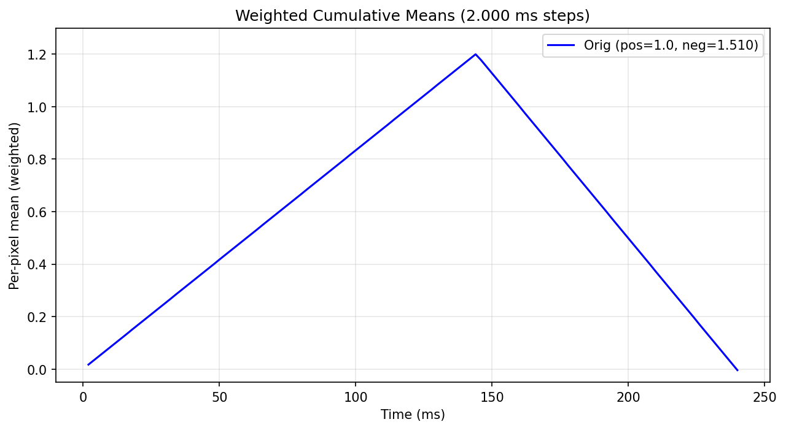

Project-owned sample · frozen 2026-09-09
A run you can
check yourself.
One public OpenHI visualization script was run against a deterministic synthetic event fixture. The revision, environment, command, log, output, and hashes are kept together here.
This sample proves the selected file/interface path in the recorded environment. It is not a customer result or a reproduction of the paper's scientific result.
Decision
GO, narrowly.
GOThe public weighted-cumulative visualization stage accepts the frozen NPZ fixture and completes headlessly.
NO-GOThis run does not establish acquisition, segmentation, learned compensation, calibration, reconstruction accuracy, or hardware compatibility.
Recorded output
The selected stage completed.
The fixture places the positive events first and the negative events second. OpenHI's auto-scaling path selected 1.510 for negative polarity, producing the expected rise-and-return trace across 240 milliseconds.

visualize_cumulative_weighted.py; synthetic input, no compensation.Pinned execution
One revision, one script, one command.
OpenHI commit 080ad074… was run with Python 3.10.13, NumPy 2.2.6, Matplotlib 3.10.9, and the headless Agg backend. The script SHA-256 begins a4f4bf94….
No client data, network call, GPU, camera SDK, RAW acquisition, or learned parameter file was used by this stage.
Reproduction packet
The evidence travels with the result.
Frozen input
Download the deterministic NPZ containing the four required arrays: x, y, t, and p.
Environment
The interpreter, NumPy, Matplotlib, backend, operating system, and machine architecture are recorded.
Read environment.json →Integrity
The manifest hashes the builder sources, fixture, log, summary, environment, report, and output image.
Read manifest.json →Failure ledger
What stopped at the edge of this test.
Environment
The repository has no locked root environment, so the exact working versions are part of the result.
Data and dependencies
The public checkout does not include the RAW acquisition used by the full wrapper, and some acquisition paths require vendor SDKs.
Untested branch
The run used --no_comp. Learned compensation and scientifically correct reconstruction remain separate tests.
Your stage · your environment · USD 500
Start by deciding whether the stage fits.
The free fit check collects setup metadata, not source data. If the job fits, the exact revision, stage, success signal, handling terms, deliverables, and timing are accepted before payment.